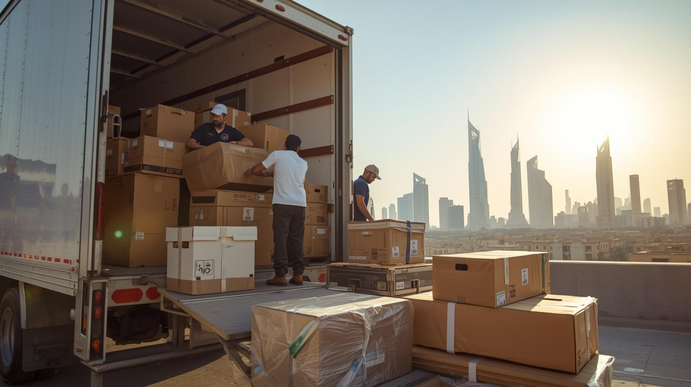

عمال نقل عفش بالرياض

يُعد عمال نقل عفش بالرياض العنصر الأساسي في نجاح أي عملية نقل داخل المدينة، فهم المسؤولون عن فك وتركيب وتغليف الأثاث بدقة لضمان وصوله إلى الوجهة الجديدة دون أي ضرر، ومع ازدياد الطلب على خدمات النقل داخل العاصمة، برزت شركة نقل الرياض كإحدى أبرز الشركات المتخصصة في هذا المجال، حيث توفر فريقًا محترفًا من العمال المدربين على التعامل مع جميع أنواع الأثاث والأجهزة بعناية واحترافية عالية، إذا كنت تبحث عن عمال موثوقين يمتلكون خبرة وخدمة سريعة وآمنة، فإن اختيار شركة نقل الرياض هو الحل الأمثل لتجربة نقل خالية من المتاعب وبأعلى معايير الجودة.
أفضل عمال نقل عفش بالرياض بخبرة عالية
تتميز شركة نقل الرياض بتوفير أفضل عمال نقل عفش بالرياض بخبرة عالية في فك وتركيب وتغليف ونقل الأثاث بجميع أنواعه، يمتاز فريق العمل بالدقة والالتزام بالمواعيد، ويستخدم أحدث الأدوات والمعدات لضمان سلامة الأثاث أثناء النقل، كما يتم تدريب العمال بشكل مستمر على أساليب النقل الحديثة لتقديم خدمة احترافية ترضي العملاء، سواء كنت ترغب في نقل أثاث منزلك أو مكتبك داخل الرياض، فإن شركة نقل الرياض توفر لك الحل المثالي بخدمة سريعة وآمنة وأسعار تنافسية تجعلها الخيار الأول لكل من يبحث عن أفضل عمال نقل عفش بالرياض.
خدمات عمال نقل عفش بالرياض للفك والتركيب والتغليف
تقدّم شركة نقل الرياض مجموعة متكاملة من خدمات عمال نقل عفش بالرياض تشمل الفك والتركيب والتغليف باحترافية عالية، لضمان نقل الأثاث بأمان وسهولة دون أي خسائر أو تلفيات، يقوم العمال بفك قطع الأثاث بعناية باستخدام أدوات مخصصة، ثم تغليفها بمواد حماية عالية الجودة مثل البلاستيك الفقاعي والورق المقوى، وبعد الوصول إلى الموقع الجديد يتم تركيبها بدقة وفق نفس الترتيب السابق. هذه الخدمات الشاملة توفر على العميل الوقت والجهد، وتجعل عملية النقل أكثر راحة وسلاسة، مما يجعل شركة نقل الرياض الخيار الأمثل لكل من يبحث عن عمال نقل محترفين يقدمون خدمة متكاملة وآمنة داخل مدينة الرياض.
مميزات اختيار عمال نقل عفش محترفين في الرياض
- الخبرة والدقة في التعامل مع جميع أنواع الأثاث والأجهزة لضمان سلامتها أثناء النقل.
- استخدام أدوات ومعدات حديثة لتسهيل عمليات الرفع والنقل بشكل آمن.
- تقديم خدمة تغليف احترافية باستخدام مواد حماية عالية الجودة.
- الالتزام التام بالمواعيد المتفق عليها مع العميل.
- أسعار تنافسية تناسب جميع الفئات مع جودة خدمة مضمونة.
- توفير ضمان على عملية النقل لضمان وصول الأثاث بحالة ممتازة.
اختيار شركة نقل الرياض يعني الاعتماد على فريق عمل محترف يقدم خدمة نقل متكاملة وموثوقة داخل مدينة الرياض.
أسعار عمال نقل عفش بالرياض 2025
تختلف أسعار عمال نقل عفش بالرياض حسب حجم الأثاث ونوعيته، والمسافة بين الموقع القديم والجديد، إضافة إلى الخدمات المطلوبة مثل الفك والتركيب والتغليف. يعتمد تحديد التكلفة أيضًا على عدد العمال والمعدات المستخدمة خلال عملية النقل. بشكل عام، يحرص العاملون في هذا المجال على تقديم أسعار تنافسية تتناسب مع ميزانية العميل، مع ضمان جودة الخدمة وسلامة الأثاث من البداية حتى نهاية النقل. لذا يُنصح دائمًا باختيار جهة موثوقة مثل شركة نقل الرياض التي توفر عمالًا محترفين يضمنون تنفيذ العمل بدقة وأمان.
كيف تختار أفضل عمال نقل أثاث في الرياض؟
عند التفكير في اختيار أفضل عمال نقل عفش في الرياض، يجب التركيز على مجموعة من المعايير الأساسية التي تضمن لك خدمة احترافية وآمنة، في البداية، اختر عمالًا لديهم خبرة عملية في نقل الأثاث بأنواعه، خاصة القطع الثقيلة والحساسة، احرص على أن يكونوا ملتزمين بالمواعيد ويستخدمون أدوات ومعدات حديثة تسهّل عملية النقل دون إتلاف الأثاث، كما يُفضَّل أن يقدموا خدمة شاملة تشمل الفك والتركيب والتغليف باستخدام مواد عالية الجودة لحماية الأغراض أثناء النقل، من المهم أيضًا التأكد من وضوح الأسعار قبل بدء العمل لتجنب أي تكاليف إضافية غير متوقعة، وأخيرًا، يُنصح بالتعامل مع جهة موثوقة توفر عمالًا مدرَّبين وتلتزم بمعايير السلامة والجودة لضمان تجربة نقل مريحة وآمنة داخل الرياض.
عمالة مدربة على نقل الأثاث الثقيل والعفش المنزلي بالرياض
تتميز العمالة المدربة على نقل الأثاث الثقيل والعفش المنزلي بالرياض بقدرتها على تنفيذ جميع مراحل النقل بدقة واحترافية عالية، حيث يمتلك العمال خبرة واسعة في التعامل مع الأثاث الضخم مثل الدواليب، الأسرة، المجالس، والأجهزة الكهربائية الكبيرة دون التسبب بأي تلف أو خدش، كما يتم استخدام أدوات حديثة وعربات مخصصة لتسهيل عملية الرفع والنقل داخل المباني أو من الأدوار العليا. ويُراعى أثناء العمل تطبيق أعلى معايير الأمان لحماية الأثاث والممتلكات، اختيارك لعمالة مؤهلة ومدربة يضمن لك نقلًا آمنًا وسريعًا، ويقلل من الجهد والمخاطر أثناء عملية النقل داخل مدينة الرياض.
هل يوفر عمال نقل العفش بالرياض سيارات مجهزة؟
نعم، عادةً ما يوفر عمال نقل العفش بالرياض سيارات نقل مجهزة خصيصًا لتناسب مختلف أنواع الأثاث والعفش المنزلي، هذه السيارات تكون مزودة بأدوات تثبيت داخلية تمنع تحرك الأغراض أثناء السير، إضافة إلى بطانات وأغطية لحماية الأثاث من الخدوش أو الكسر. كما تختلف أحجام السيارات لتتناسب مع حجم العفش، سواء كان النقل لمنزل صغير أو فيلا كبيرة، ويقوم السائقون بالتعامل بحذر أثناء التحميل والتنزيل لضمان سلامة المحتويات حتى الوصول إلى الموقع الجديد. وجود سيارات مجهزة يساعد في تسهيل عملية النقل وجعلها أكثر أمانًا وسرعة داخل مدينة الرياض.
نصائح قبل الاستعانة بعمال نقل عفش بالرياض
فيما يلي مجموعة من النصائح قبل الاستعانة بعمال نقل عفش بالرياض لضمان عملية نقل سلسة وآمنة:
- اختيار جهة موثوقة: تأكد من التعامل مع شركة معروفة أو عمال لديهم تقييمات إيجابية وخبرة في المجال.
- تحديد قائمة بالأغراض: قم بحصر الأثاث والأجهزة التي تحتاج إلى نقلها لتسهيل تقدير الوقت والتكلفة.
- الاتفاق المسبق على التفاصيل: ناقش جميع الخدمات المطلوبة مثل الفك، التغليف، التركيب، ونوع السيارة المستخدمة قبل بدء العمل.
- التأكد من وجود تأمين: يُفضل أن تكون الخدمة مضمونة في حال حدوث أي تلف أو كسر أثناء النقل.
- استخدام مواد تغليف مناسبة: اطلب استخدام مواد حماية قوية مثل البلاستيك الفقاعي والورق المقوى للحفاظ على الأثاث من الخدوش.
- تنظيم يوم النقل: اختر موعدًا مناسبًا وتجنب أوقات الذروة أو الظروف الجوية الصعبة لتسهيل حركة النقل.
- الإشراف أثناء العمل: تابع عملية التحميل والتنزيل بنفسك لضمان التعامل الصحيح مع الأثاث.
اتباع هذه النصائح يساعدك في الحصول على تجربة نقل مريحة وآمنة، ويضمن أن يتم العمل بكفاءة ودقة من قبل العمال المختصين في نقل العفش داخل الرياض.
عمال نقل أثاث بالرياض متوفرين على مدار الساعة
تُعد عمال نقل عفش بالرياض الخيار الأمثل لكل من يبحث عن خدمة نقل احترافية متوفرة على مدار الساعة داخل المدينة، يتمتع هؤلاء العمال بخبرة واسعة في فك وتركيب وتغليف الأثاث باحترافية عالية، مع استخدام أدوات ومعدات حديثة تضمن سلامة العفش أثناء النقل. كما تتوفر لديهم سيارات مجهزة بمواصفات خاصة لنقل الأثاث بأمان وسرعة، سواء داخل الأحياء أو بين مناطق الرياض المختلفة. وتتيح الخدمة إمكانية الحجز في أي وقت يناسب العميل، مما يجعل عمال نقل عفش بالرياض الحل المثالي لمن يبحث عن راحة، سرعة، وأمان في عملية النقل دون عناء.
سيارات نصف نقل لنقل العفش بالرياض
شركة نقل توفر عمال نقل عفش موثوقين في الرياض
تُعد شركة نقل الرياض من أبرز الشركات التي توفر عمال نقل عفش بالرياض موثوقين بخبرة طويلة في هذا المجال، تمتاز الشركة بفريق عمل محترف ومدرب على التعامل مع جميع أنواع الأثاث، من القطع الثقيلة إلى الأغراض الحساسة، مع استخدام أدوات حديثة تضمن فك وتركيب ونقل الأثاث بأمان تام. كما توفر سيارات نقل مجهزة بالكامل للحفاظ على سلامة العفش أثناء التحميل والنقل، وتتميز الشركة بالالتزام بالمواعيد والدقة في الأداء، إضافة إلى تقديم أسعار تنافسية وخدمة عملاء متاحة على مدار الساعة، اختيارك لـ شركة نقل الرياض يعني الاعتماد على عمال موثوقين يقدّمون لك تجربة نقل سهلة وآمنة داخل المدينة.
في الختام، إذا كنت تبحث عن عمال نقل عفش بالرياض يقدمون خدمة احترافية وآمنة، فإن شركة نقل الرياض هي خيارك الأفضل، تمتلك الشركة فريقًا مدربًا على أعلى مستوى في فك وتركيب وتغليف الأثاث باحترافية تامة، إضافة إلى سيارات نقل مجهزة لضمان حماية العفش أثناء التحميل والنقل، كما تلتزم الشركة بالمواعيد وتوفر أسعارًا تنافسية تناسب جميع العملاء، مع شركة نقل الرياض ستحصل على تجربة نقل سهلة، سريعة، وآمنة داخل المدينة، دون عناء أو قلق على ممتلكاتك، تواصل معنا الآن لتحصل على خدمة موثوقة تلبي جميع احتياجاتك في نقل الأثاث داخل الرياض.
الأسئلة الشائعة حول عمال نقل عفش بالرياض
هل يوفر عمال نقل عفش بالرياض خدمة الفك والتركيب؟
نعم، يقدم عمال نقل عفش بالرياض خدمة متكاملة تشمل فك الأثاث في الموقع القديم، ونقله بأمان، ثم تركيبه مجددًا في الموقع الجديد باستخدام أدوات احترافية تضمن سلامة الأثاث وجودته بعد النقل
هل يتم استخدام مواد تغليف لحماية الأثاث أثناء النقل؟
بالتأكيد، يعتمد عمال نقل عفش بالرياض على مواد تغليف عالية الجودة مثل البلاستيك الفقاعي والورق المقوى لحماية الأثاث من الخدوش أو الكسر أثناء التحميل والنقل، مما يضمن وصوله بحالة ممتازة.